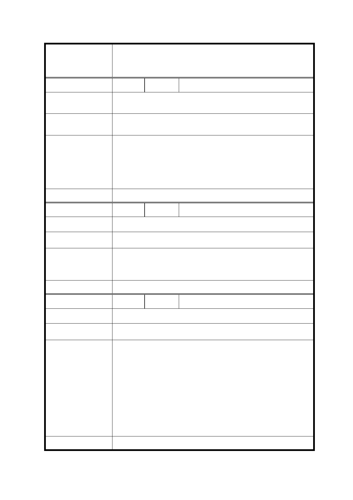

修訂臺北市信義計畫地區細部計畫（第三次通盤
案 名 檢討）案
編
號 20
陳情人 周○芳
陳 情 理 由 新舞台現址屋齡不到 20 年，若被指定為歷史建物有違文化資產
保存法之立法精神。
建 議 辦 法 請政府在本區規劃時，應全盤考量台北市需要多少公益文教設
施，並充分利用地上權開發案，要求投標人納入規劃。
本次通盤檢討係依 102 年 12 月 30 日｢臺北市文化資產審議委員
會第 54 次會議｣決議登錄「新舞臺」為本市文化景觀，並附帶決
市 府 回 覆 意 見 議｢於新舞臺所在基地維持原表演空間機能，未來使用如有變
更，需提送臺北市文化資產審議委員會審議｣，故配合修訂計畫
內容，以維該文化景觀。
委 員 會 決 議 同決議二及市府回覆意見。
編
號 21
陳情人 蔡○光
陳 情 理 由 全面檢討公益設施使用。
建 議 辦 法 市府提供公有地，財團以回饋名義興建或營運。
為促進信義計畫地區之土地利用，並增加公共開放空間及公益設
市 府 回 覆 意 見 施，業於 89 年第二次通盤檢討案中增訂「臺北市信義計畫地區
開發獎勵實施要點」，提高提供公益性設施之誘因。
委 員 會 決 議 依市府回覆意見辦理。
編
號 22
陳情人 楊○傑
陳 情 理 由 政府應支持並鼓勵企業贊助藝文活動。
建 議 辦 法 支持藝文活動應考量長期及完善的營運計畫。
市府回覆意見
1. 本次通盤檢討係依 102 年 12 月 30 日｢臺北市文化資產審議
委員會第 54 次會議｣決議登錄「新舞臺」為本市文化景觀，
並附帶決議｢於新舞臺所在基地維持原表演空間機能，未來
使用如有變更，需提送臺北市文化資產審議委員會審議｣，
故配合修訂計畫內容，以維該文化景觀。
2. 另依本計畫區規定，目前未開發之公有地（A13 及 A25 街廓）
均得設置｢第 15 組：社教設施｣及｢第 16 組：文康設施｣，至
是否從事藝文表演活動，仍應考量本府政策及實際開發需求
而定。
委 員 會 決 議 同決議二及市府回覆意見。
37